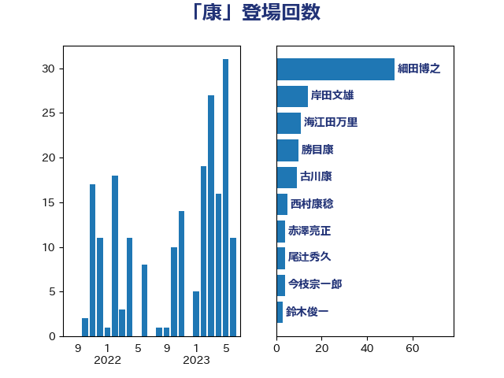

単語「康」

| 細田博之 | 自由民主党 | 52 回 |
| 岸田文雄 | 自由民主党 | 14 回 |
| 海江田万里 | 立憲民主党 | 11 回 |
| 勝目康 | 自由民主党 | 10 回 |
| 古川康 | 自由民主党 | 9 回 |
| 西村康稔 | 自由民主党 | 5 回 |
| 赤澤亮正 | 自由民主党 | 4 回 |
| 尾辻秀久 | 無所属 | 4 回 |
| 今枝宗一郎 | 自由民主党 | 4 回 |
| 鈴木俊一 | 自由民主党 | 3 回 |
| 足立康史 | 日本維新の会 | 3 回 |
| 猪瀬直樹 | 日本維新の会 | 3 回 |
| 根本匠 | 自由民主党 | 3 回 |
| 松本剛明 | 自由民主党 | 3 回 |
| 山口俊一 | 自由民主党 | 3 回 |
| 青山周平 | 自由民主党 | 2 回 |
| 関芳弘 | 自由民主党 | 2 回 |
| 藤丸敏 | 自由民主党 | 2 回 |
| 田嶋要 | 立憲民主党 | 2 回 |
| 河野太郎 | 自由民主党 | 2 回 |
| 森英介 | 自由民主党 | 2 回 |
| 小野泰輔 | 日本維新の会 | 2 回 |
| 吉田はるみ | 立憲民主党 | 2 回 |
| 三谷英弘 | 自由民主党 | 2 回 |
| 三ッ林裕巳 | 自由民主党 | 2 回 |
| 黄川田仁志 | 自由民主党 | 1 回 |
| 鈴木義弘 | 国民民主党 | 1 回 |
| 進藤金日子 | 自由民主党 | 1 回 |
| 赤羽一嘉 | 公明党 | 1 回 |
| 西銘恒三郎 | 自由民主党 | 1 回 |
| 藤田文武 | 日本維新の会 | 1 回 |
| 義家弘介 | 自由民主党 | 1 回 |
| 篠原孝 | 立憲民主党 | 1 回 |
| 笠井亮 | 日本共産党 | 1 回 |
| 稲田朋美 | 自由民主党 | 1 回 |
| 礒崎哲史 | 国民民主党 | 1 回 |
| 田村貴昭 | 日本共産党 | 1 回 |
| 田島麻衣子 | 立憲民主党 | 1 回 |
| 猪口邦子 | 自由民主党 | 1 回 |
| 牧原秀樹 | 自由民主党 | 1 回 |
| 浜田靖一 | 自由民主党 | 1 回 |
| 江藤拓 | 自由民主党 | 1 回 |
| 水野素子 | 立憲民主党 | 1 回 |
| 橋本岳 | 自由民主党 | 1 回 |
| 森本真治 | 立憲民主党 | 1 回 |
| 村田享子 | 立憲民主党 | 1 回 |
| 杉本和巳 | 日本維新の会 | 1 回 |
| 木原稔 | 自由民主党 | 1 回 |
| 後藤茂之 | 自由民主党 | 1 回 |
| 平口洋 | 自由民主党 | 1 回 |
| 岩渕友 | 日本共産党 | 1 回 |
| 山岡達丸 | 立憲民主党 | 1 回 |
| 小里泰弘 | 自由民主党 | 1 回 |
| 宮本岳志 | 日本共産党 | 1 回 |
| 宮内秀樹 | 自由民主党 | 1 回 |
| 天畠大輔 | れいわ新選組 | 1 回 |
| 大西健介 | 立憲民主党 | 1 回 |
| 大岡敏孝 | 自由民主党 | 1 回 |
| 塩村あやか | 立憲民主党 | 1 回 |
| 務台俊介 | 自由民主党 | 1 回 |
| 加藤勝信 | 自由民主党 | 1 回 |
| 加田裕之 | 自由民主党 | 1 回 |
| 井上英孝 | 日本維新の会 | 1 回 |